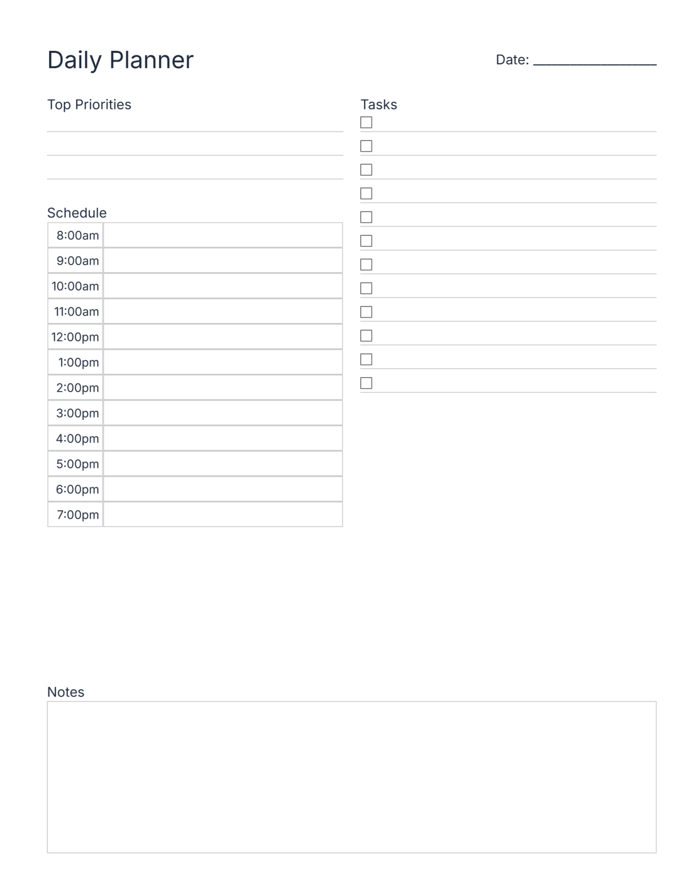
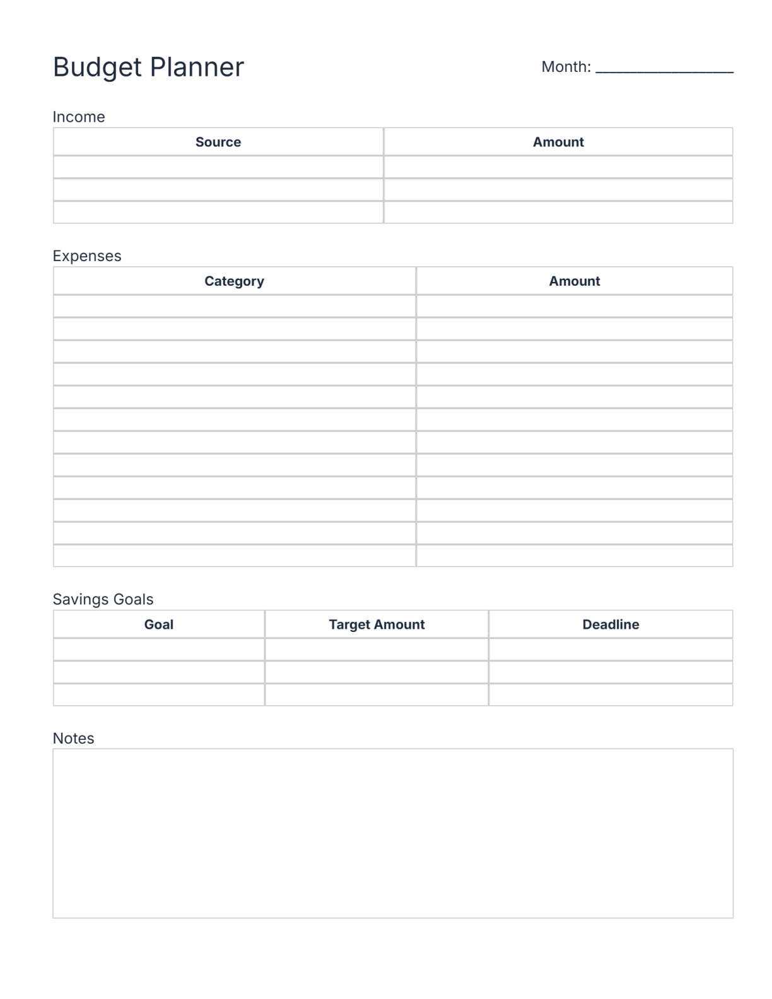
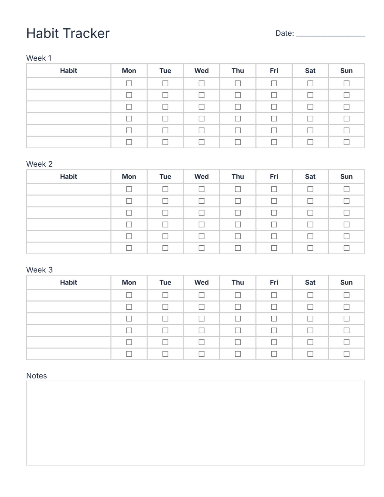
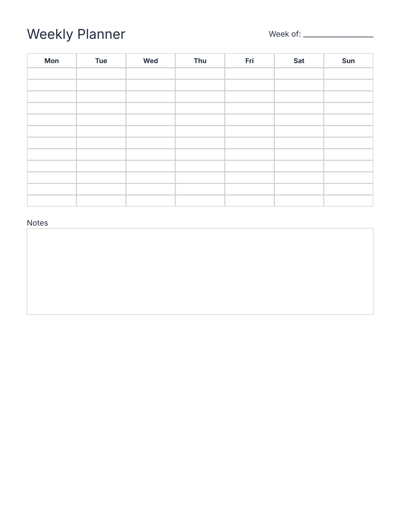

Budget Planner
Track expenses, income, and savings.
Generate a printable budget planner PDF for monthly finances.
Budget Planner Generator
Gain control of your finances with this free budget planner generator. Whether you're managing household expenses, planning for savings, or tracking income from multiple sources, this tool helps you visualize where your money goes each month. Many people struggle with overspending because they lack a clear picture of their financial habits. This generator creates a customizable, printable budget template in seconds. Simply enter your income, list your expenses, and watch the totals calculate aut
Chore Chart
Organize household chores with a clean printable chart.
Generate a printable chore chart PDF for families, kids, or shared homes.
Chore Chart Generator
Assign household responsibilities fairly and build accountability with this free chore chart generator. Families, roommates, and co-habiting adults struggle when chore expectations are unclear—leading to resentment and mess. This tool creates a clear, printable chore chart that shows who does what and when. Customize assignments by person, room, and frequency, then generate a chart perfect for posting on your fridge or shared wall. The visual structure makes responsibilities transparent, helps
Cleaning Schedule
Create a weekly or monthly cleaning plan.
Generate a printable cleaning schedule PDF for home organization.
Cleaning Schedule Generator
A clean home requires a system, and this free cleaning schedule generator turns chaos into clarity. Whether you're managing a weekly deep clean, monthly deep clean, or seasonal projects, this tool helps you break cleaning into manageable tasks and assign them to days. Without a plan, cleaning often gets neglected, leading to overwhelming clutter and allergen buildup. This generator creates a printable cleaning schedule customized to your needs and home size. Assign rooms, frequency levels, and t
Home Maintenance Log
Track repairs, inspections, and home upkeep.
Generate a printable home maintenance log PDF for repairs and upkeep.
Home Maintenance Log Generator
Home maintenance records protect your investment and keep your property in top condition. This free home maintenance log generator creates a customizable log for tracking repairs, inspections, service dates, and costs. Whether you're a homeowner, renter, or property manager, maintaining records helps prove that upkeep has occurred, supports insurance claims, increases resale value, and prevents costly emergency repairs. Log HVAC services, plumbing work, roof inspections, or appliance repairs—a
Meal Planner
Plan meals for the week with ease.
Generate a printable meal planner PDF for weekly food planning.
Meal Planner Generator
Planning meals ahead reduces stress, saves money, and keeps your family eating healthy. This free meal planner generator creates a customizable weekly meal plan and grocery list in seconds. Whether you're feeding a family, meal-prepping for the week, or managing dietary restrictions, having a visual plan transforms meal preparation from chaotic to organized. Simply define your meals, add ingredients to track, and generate a printable planner. Share it with your family, post it on the fridge, or
Daily Planner
Plan your day with priorities, schedule blocks, and tasks.
Generate a clean, printable daily planner PDF with schedule blocks, priorities, and tasks.
Daily Planner Generator
Start each day with intention instead of reactivity. This free daily planner generator creates a customizable, printable daily schedule that helps you prioritize, time-block, and execute. Whether you're managing work projects, household responsibilities, or personal goals, a structured plan keeps you focused and reduces decision fatigue. Without a plan, your day is controlled by emails, interruptions, and urgency rather than your priorities. This generator lets you add priorities, time blocks, t
Goals Planner
Set and track your goals with clarity.
Generate a printable goals planner PDF with milestones and progress tracking.
Goals Planner Generator
Turn vague aspirations into concrete plans that you actually achieve. This free goals planner generator creates a printable workbook that helps you define goals, break them into milestones, and track progress. Without a written plan with milestones, most goals remain wishes—vague intentions that get forgotten amid daily chaos. This tool guides you through goal-setting with SMART principles, helps you visualize progress, and keeps you accountable. Define your goals, add quarterly milestones, tr
Monthly Planner
Plan your month with goals, events, and priorities.
Generate a printable monthly planner PDF with goals, events, and priorities.
Monthly Planner Generator
Long-term success requires planning beyond the daily grind. This free monthly planner generator creates a calendar view of your entire month, showing goals, milestones, events, and priorities in one visual space. Many people struggle because they focus only on today's urgent tasks while ignoring monthly objectives, deadlines, and milestones. This tool helps you zoom out and see patterns, track progress toward bigger goals, and spot scheduling conflicts. Define major goals, add key dates, schedul
Project Planner
Plan projects with tasks, milestones, and goals.
Generate a printable project planner PDF with tasks, milestones, and goals.
Project Planner Generator
Complete projects on time by breaking them into clear tasks and milestones. This free project planner generator creates a printable project roadmap that tracks tasks, deadlines, milestones, and progress. Projects fail when scope is unclear, tasks are disorganized, or milestones aren't visible. This tool helps you define project goals, list tasks with dependencies, set milestones, and track completion status. Whether you're managing a work initiative, school project, or personal goal, having ever
Time Block Planner
Organize your day with structured time blocks.
Generate a printable time block planner PDF for focused scheduling.
Time Block Planner Generator
Eliminate fragmentation and reclaim deep focus with time blocking. This free time block planner generator creates a structured hourly schedule that protects focused work time and prevents constant context-switching. Knowledge workers waste hours jumping between meetings, emails, and interruptions—losing the ability to do meaningful work. Time blocking solves this by assigning specific hours to specific activities: deep work, meetings, admin, collaboration. This tool generates a customizable ho
To-Do List
Create a clean, printable task list.
Generate a printable to-do list PDF with tasks, priorities, and notes.
To-Do List Generator
Get everything out of your head and onto a list you can actually manage. This free to-do list generator creates a printable task list that helps you capture, prioritize, and execute. Mental clutter from unwritten tasks drains focus and creates anxiety—your brain is busy remembering instead of thinking strategically. A simple printed to-do list offloads that burden, freeing mental energy for actual work. This generator lets you quickly add tasks, prioritize them, add notes, and generate a clean
Weekly Planner
Plan your week with goals, tasks, and priorities.
Generate a printable weekly planner PDF with goals, tasks, and priorities.
Weekly Planner Generator
Take control of your entire week with a strategic plan that aligns daily actions with bigger goals. This free weekly planner generator creates a printable planner that shows your week at a glance, with space for goals, tasks, priorities, and daily schedules. Most people live day-to-day without connecting their work to broader objectives—missing opportunities for progress. This generator lets you define weekly goals, break them into daily tasks, and stay accountable. Customize columns for Monda
Weekly Review
Reflect on your week and plan ahead.
Generate a printable weekly review PDF with prompts and reflection sections.
Weekly Review Generator
Reflection transforms experience into growth. This free weekly review generator creates a guided workbook that prompts you to review the week, celebrate wins, acknowledge challenges, and plan next week. Most people move from week to week without pausing—missing lessons, repeating mistakes, and losing momentum. A structured review session changes that by building self-awareness and intentionality. This tool provides prompts for achievements, learnings, obstacles, priorities, and next-week goals
Reading Log
Track books, pages, and reading progress.
Generate a printable reading log PDF for books and reading goals.
Reading Log Generator
Reading is transformative, but many readers never finish books because they lose track of progress and context. This free reading log generator creates a printable tracker that records every book you read, captures key takeaways, and builds accountability for your reading goals. Whether you're a student, book lover, or professional seeking growth, logging your reading motivates completion and preserves lessons. Track book title, author, pages read, completion date, and personal notes or quotes.
Study Planner
Plan study sessions and track progress.
Generate a printable study planner PDF for school or self-learning.
Study Planner Generator
Effective studying requires a plan, not just time. This free study planner generator creates a printable study schedule that breaks subjects into manageable sessions, tracks topics covered, and builds exam readiness. Students often struggle because they study inefficiently—cramming without strategy instead of spacing learning over time. This tool helps you plan study sessions by subject, set realistic daily goals, track completion, and visualize progress toward exams. Whether you're preparing
Fitness Planner
Track workouts, cardio, habits, and progress.
Generate a clean, printable fitness planner PDF in seconds.
Fitness Planner Generator
Fitness consistency beats intensity every time, but most people quit because they lack motivation and tracking. This free fitness planner generator creates a printable workout log that tracks exercises, sets, reps, cardio sessions, and body metrics over time. Seeing visual progress builds momentum and keeps you motivated through plateaus. Whether you're starting a gym routine, training at home, or optimizing performance, logging workouts ensures accountability and prevents skipped sessions. Trac
Gratitude Journal
Create a calming, printable gratitude journal page in seconds.
Generate a simple, printable gratitude journal PDF to reflect on the positive moments in your day.
Gratitude Journal Generator
Gratitude practice fundamentally rewires your brain toward happiness and resilience, yet most people practice it sporadically if at all. This free gratitude journal generator creates a printable journal that guides you to capture what you're grateful for, who you appreciate, and why. Regular gratitude journaling reduces stress, increases contentment, and shifts focus from scarcity to abundance. Whether you're managing depression, seeking mindfulness, or simply wanting more joy, a daily gratitude
Habit Tracker
Track habits and build consistency.
Generate a printable habit tracker PDF for daily and weekly habits.
Habit Tracker Generator
Tiny habits compound into transformation, but most people fail at habit building because they lack visibility into their progress. This free habit tracker generator creates a printable grid that makes building habits simple: define your habits, track daily or weekly, and watch your consistency streak grow. Behavioral science shows that visible progress motivates continued effort—even on hard days. Whether you're building exercise, meditation, reading, or wellness habits, a printed tracker keep
Mood Tracker
Track your mood and emotional patterns.
Generate a printable mood tracker PDF for daily emotional logs.
Mood Tracker Generator
Emotional awareness is the foundation of mental health, yet most people never track or examine their mood patterns. This free mood tracker generator creates a printable log where you record daily moods, note triggering events, and discover what influences your wellbeing. Over time, patterns emerge: certain activities lift your mood, specific stressors drain you, and tracking itself builds self-awareness. Whether you're managing anxiety, depression, or simply optimizing happiness, a mood journal
Sleep Tracker
Track sleep quality and patterns.
Generate a printable sleep tracker PDF for nightly sleep logs.
Sleep Tracker Generator
Sleep quality directly impacts health, mood, and productivity, yet most people never measure or optimize their sleep. This free sleep tracker generator creates a printable log that records sleep duration, bedtime, wake time, quality ratings, and factors affecting sleep. Tracking your sleep reveals patterns: which routines improve rest, which habits disrupt it, and how sleep influences your day. Whether you're recovering from insomnia, optimizing athletic performance, or managing health condition
Water Tracker
Track daily water intake easily.
Generate a printable water tracker PDF for daily hydration.
Water Tracker Generator
Dehydration impacts cognition, energy, and physical performance, yet most people drink too little water because they forget or lack accountability. This free water tracker generator creates a printable tracker that visually represents daily hydration goals through cups or ounces. Seeing a fillable tracker motivates people to drink more—it's simple, visual, and satisfying to complete. Whether you're improving energy, supporting fitness, or enhancing skin health, consistent hydration is foundati
Plan Less.
Accomplish More.
MicroPlan Studio offers a complete collection of free, no-signup planner generators. Each tool is designed for a single planning need, all presented here in one place. MicroPlan Studio is your toolkit for building your perfect planner. Generate printable PDFs for daily planning, budgeting, fitness tracking, home management, learning, and wellness. No signup, no ads, no tracking. Built for people who work best with pen, paper, and intention. Start planning today.
Want Beautifully Designed Premium Planners?
Explore hand-crafted, customizable planner templates from SystemCraft AI Studio
See How It Works
Choose a planner, customize it, and download your PDF instantly
Daily Planner
Plan your day with priorities, schedule blocks, and tasks.
- ✓ Time-block your entire day
- ✓ Prioritize your top 3 goals
- ✓ Track tasks and progress
- ✓ Print and carry with you

Budget Planner
Track your income, expenses, and savings.
- ✓ Categorize your spending
- ✓ Track income and expenses
- ✓ Monitor your savings goals
- ✓ Monthly summary and analysis

Habit Tracker
Build consistency with visual habit tracking.
- ✓ Track multiple habits simultaneously
- ✓ Visual checkboxes for daily progress
- ✓ See your consistency streaks
- ✓ Monthly habit summary

Weekly Planner
Plan your entire week at a glance.
- ✓ 7-day weekly overview
- ✓ Plan goals for the week
- ✓ Daily task lists for each day
- ✓ Space for notes and reflections

Choose Your Planner
Select any planner below to generate and customize your printable PDF in seconds
Select a planner from above to get started
Preview
Love Our Free Tools?
Want professionally designed, premium planners and bundles?
Why MicroPlan Studio?
Most people fail at planning because the process is too complicated, too intrusive, or too rigid. MicroPlan Studio reimagines planning as a collection of small, focused tools—one for each area of your life. Daily planning, weekly reviews, fitness tracking, budget management, study planning, habit building. Instead of a massive all-in-one app, we give you 21 micro-tools you can customize, print, and use offline. Every planner generator is designed for privacy and focus. No accounts. No tracking (beyond basic, anonymous analytics). No intrusive marketing. No forced subscriptions. Just clean, functional tools that work offline. Download your planner, print it, and plan with intention. Whether you're optimizing productivity, managing home, tracking wellness, or pursuing goals, we have a tool for that. Start planning today — free, forever.
© 2026 MicroPlan Studio — Free planner tools